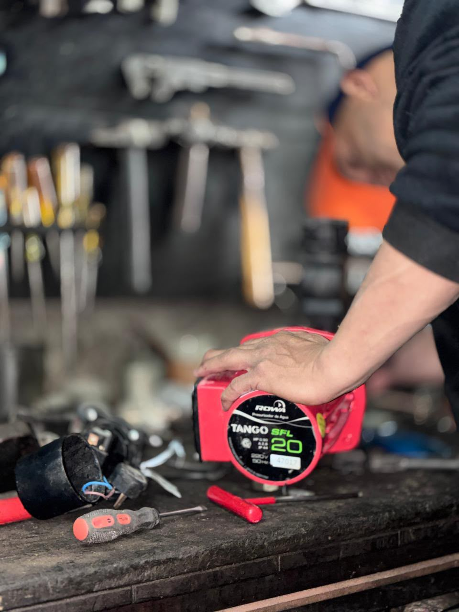
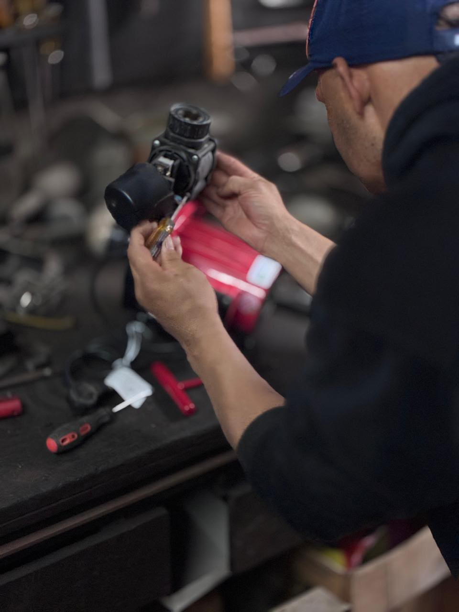
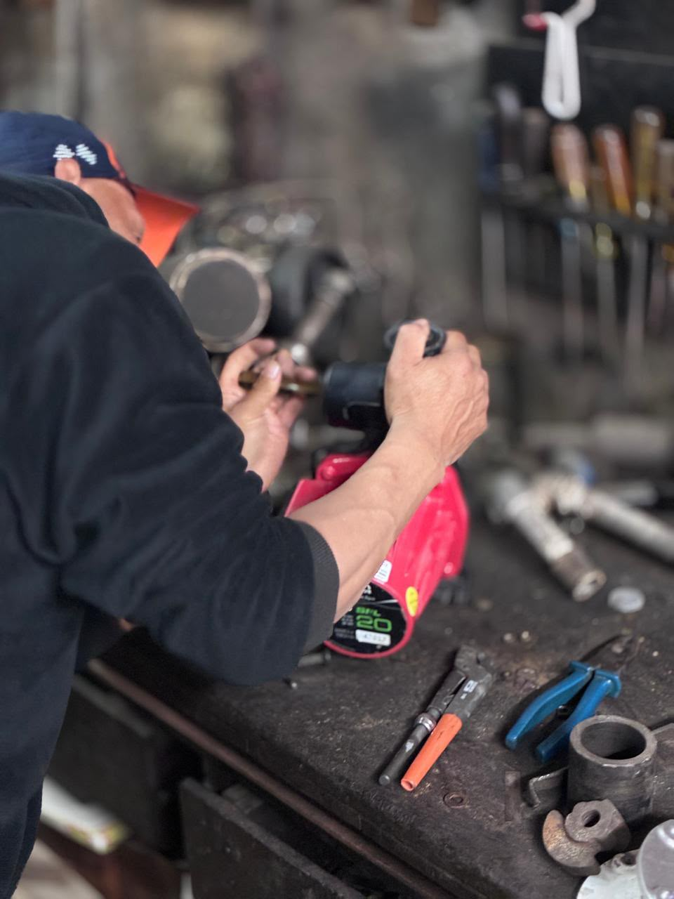

!
ESPECIALISTAS EN BOMBAS ROWA
¿Tu bomba ROWA dejó de funcionar?
Encontramos la falla, te explicamos qué tiene y cuánto cuesta antes de reparar.
✓ Diagnóstico claro✓ Precio antes de reparar✓ Sin sorpresas

Especialistas en ROWAConocemos sus fallas más frecuentes.
Diagnóstico primeroBuscamos la causa antes de cambiar piezas.
Precio claroSabés cuánto cuesta antes de autorizar.
CABA y GBACoordinamos según zona y disponibilidad.
Fallas frecuentes
¿Qué le pasa a tu bomba?
Conocemos las fallas más comunes de los equipos ROWA y sabemos dónde buscar.
↕
Tiene poca presión
♪
Hace ruido
∞
No corta
≈
Prende y apaga sola
⌁
Pierde agua
Servicio especializado
Primero diagnosticamos. Después reparamos.
Te explicamos qué tiene y cuánto cuesta antes de hacer el trabajo. Sin sorpresas.
PASO 01
Nos contás qué pasa
Modelo, síntoma y, si podés, foto o video.
PASO 02
Diagnosticamos
Revisamos la bomba y la instalación para encontrar la causa.
PASO 03
Te damos solución y precio
Sabés qué recomendamos y cuánto cuesta antes de autorizar.
PASO 04
Reparamos y probamos
Hacemos el trabajo y verificamos que el equipo funcione correctamente.
Trabajo técnico
Especialización que se nota en el trabajo.
Diagnosticamos antes de cambiar piezas, reparamos con criterio y comprobamos el resultado.

Diagnóstico
Medición y revisión de componentes antes de definir la reparación.

Reparación
Intervenimos únicamente sobre lo que el diagnóstico indica.

Prueba final
Verificamos el funcionamiento antes de dar el trabajo por terminado.
Equipos ROWA
Identificamos tu bomba antes de coordinar.
Mandanos una foto de la etiqueta
Con el modelo y una breve descripción de la falla podemos orientarte mejor desde el primer contacto y verificar repuestos.
Foto de la etiqueta + síntoma + barrio: con eso empezamos.
Preguntas frecuentes
Lo que conviene saber antes de coordinar.
¿Conviene reparar o cambiar la bomba?
Depende del diagnóstico, la antigüedad, el estado general, la disponibilidad de repuestos y el costo. Te explicamos las alternativas antes de decidir.
¿Pueden revisar una bomba que no arranca?
Sí. “No arranca” es un síntoma. Revisamos alimentación, componentes eléctricos, sensores, estado mecánico e instalación según el equipo.
¿Trabajan en consorcios y edificios?
Sí, cuando el equipo y la instalación se encuentran dentro del alcance técnico. En sistemas de mayor tamaño conviene enviar fotos, modelo y características antes de coordinar.
¿Informan el costo antes de reparar?
Sí. Una vez identificado el problema, te informamos el trabajo propuesto y su costo antes de intervenir.
¿Qué conviene enviar para coordinar?
Una foto de la etiqueta, una foto o video de la falla y el barrio o localidad. Con esos datos podemos orientarte mejor desde el primer contacto.
Zonas de atención
CABA y principales zonas de GBA.
La coordinación depende de la ubicación, el tipo de equipo y la disponibilidad.
PalermoRecoletaBelgranoCaballitoVilla UrquizaVilla DevotoAlmagroVilla CrespoFloresNúñezColegialesSaavedraBoedoBarracasSan TelmoPuerto MaderoVicente LópezOlivosMartínezSan IsidroAcassusoBeccarTigreSan Fernando
Contanos qué le pasa a tu bomba.
Con tres datos podemos orientarte más rápido y decirte cómo seguir.
1 · Foto de la etiqueta2 · Foto o video de la falla3 · Barrio o localidad